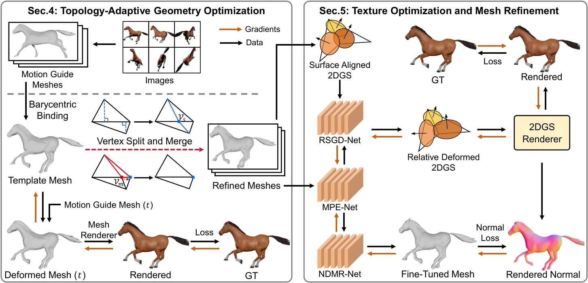
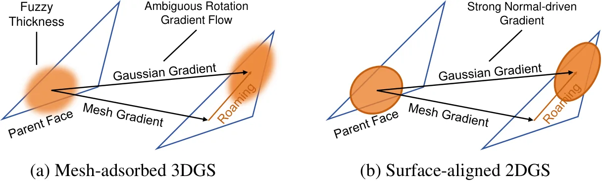
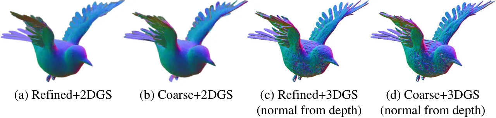
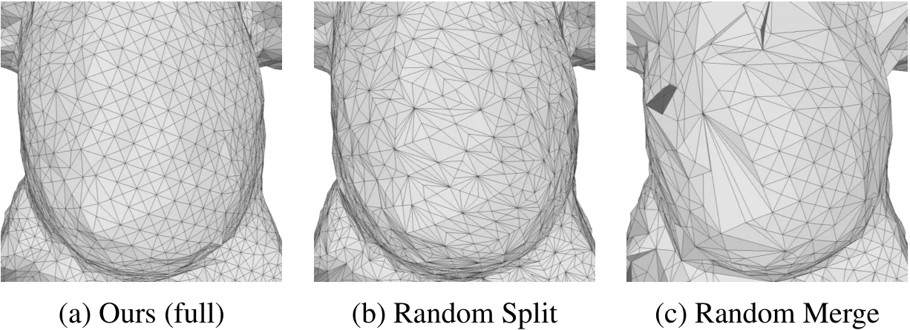
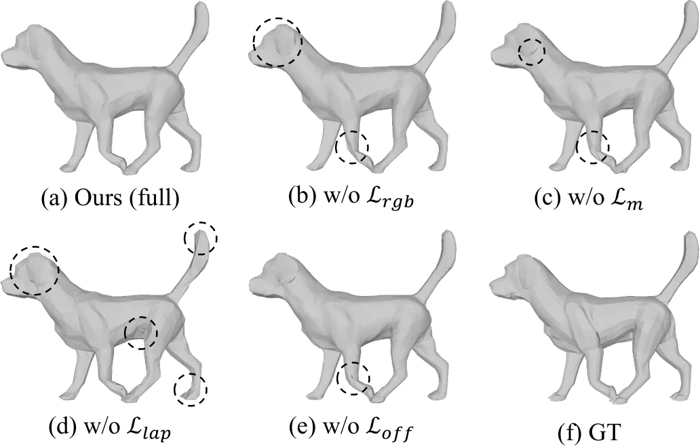

ToCo-Mesh：用自适应细分与面吸附 2DGS 重建拓扑一致的动态网格
ToCo-Mesh: Topology-Consistent Dynamic Mesh Reconstruction via Adaptive Tessellation and Surface-Aligned 2DGS
把拓扑自由度收进规范空间的单一模板，让自适应细分不再破坏帧间顶点对应，再用面吸附 2DGS 的法向监督反向细化几何。
mean Chamfer distance
vertices
作者、单位与技术谱系 · Research context
作者与单位
研究脉络
- MaGS（Ma et al., ICCV 2025）方法基座关系：本文直接沿用其引导网格与姿态嵌入网络，并补齐它固定的拓扑[arXiv 官方 HTML v1]
- DG-Mesh（Peng et al., ICLR 2025）上游方法与评测基座关系：提供形变场式动态高斯网格的对照路线与本文的定量评测数据集[arXiv 官方 HTML v1]
- 2DGS（Huang et al., SIGGRAPH 2024）方法基座关系：面吸附 Gaussian、法向正则与渲染管线的来源[arXiv 官方 HTML v1]
- VertexRegen（Zhang et al., ICCV 2025）上游方法（细分思路）关系：把静态网格生成中的顶点分裂扩展到动态场景[arXiv 官方 HTML v1]
合作网络
- 论文作者与单位论文署名作者 → 中国科学技术大学（USTC, Hefei）关系：署名单位[arXiv 官方 HTML v1]
- 阶段一的可微渲染依赖ToCo-Mesh 阶段一（拓扑自适应几何优化） → nvdiffrast（Laine et al., 2020）关系：明确技术依赖[arXiv 官方 HTML v1]
- 引导网格初始化依赖引导网格构建 → Deformable-GS（Yang et al., 2024b）或 SMPL（Loper et al., 2015）关系：明确技术依赖[arXiv 官方 HTML v1]
- MaGS 与 DG-Mesh 的作者重叠MaGS（Ma et al., 2025） → DG-Mesh（Peng et al., 2025）关系：共同署名（同一团队的相邻工作）[arXiv 官方 HTML v1]
作者、单位与会议信息来自论文作者块与页眉；技术接续来自正文引用、实现细节与参考文献列表。除署名、明确的技术依赖与参考文献作者重叠外，未发现公开证据支持的师生或机构合作关系，相关推断不作补写。
方法本质拆解 · What actually changed
是不是微调？
不是微调：阶段一在单个场景上优化 10,000 迭代（nvdiffrast 可微光栅化），阶段二联合优化 40,000 迭代，模板网格、绑定参数与三个网络（姿态嵌入、RSGD 面内滑动、NDMR 顶点精化）都是该场景内从头训练的；引导网格由 Deformable-GS 或 SMPL 初始化，属于结构化初值而不是通用预训练权重。
有没有额外约束？
拓扑层面只有两类操作被允许：在模板网格上按 S_f 得分分裂、按退化阈值 τ_degen 合并，分裂后父面参数被平滑传播，从而保证任何时刻的拓扑都来自同一份模板；损失层面把 L_rgb、轮廓项、Laplacian 平滑、offset 平滑与 stop-gradient 的 L_geo 法向一致项一起作用在顶点位置与法向偏移上，约束的是几何而不是外观。
推理/后端到底做了什么？
推理不做测试时优化或全局平差：给定粗引导网格与绑定参数，查询 + 插值即可得到任意时刻的高分辨率网格，渲染由 nvdiffrast 与面吸附 2DGS 光栅化完成，形变由姿态嵌入网络前向给出，因此它是前馈式的重建回放而不是优化式后端。
方法本质是什么？
把“拓扑”这个自由度从逐帧网格搬到规范空间的单一模板：任何细化都无损传播从而天生保持帧间对应；再用面吸附 2DGS 渲染出的高质量法向反过来修正顶点，弥补光度监督的病态；代价是必须先有一个时序一致但粗糙的引导网格，且全场景只有一个模板。
输入=时序多视角图像 + 时序一致的粗引导网格；改变的位置=网格拓扑与顶点（在规范空间控制）；动作=误差驱动的分裂/合并 + 面吸附 2DGS 法向反向微调；效果=自适应加密的同时严格保持帧间顶点对应，DG-Mesh 平均 CD 0.659 且顶点数只 13K。

动机与问题Motivation
动机与问题
论文把已有路线分成两类并指出各自的硬伤：逐帧提取（DysurfGS、D-2DGS、DGNS 依赖 Marching Cubes 或 TSDF）在每帧独立生成网格，必然破坏顶点对应，纹理映射所需的时序一致性随之丢失；模板变形（MaGS 用引导网格做拓扑模板）虽有时序对应，但优化只微调顶点位置、分辨率被初始状态锁死，无法适应动态场景中才出现的几何复杂度。作者进一步指出，若直接在每帧分别细分，会立刻摧毁帧间顶点对应；而只靠光度误差加正则优化顶点是高病态问题，几何与外观的歧义会产生尖刺、噪声等非物理几何。这两点正是它要同时解决“何时加密”和“在哪里加密”的动机。
方法Method
方法总览
流程是两阶段 coarse-to-fine。阶段一先按 MaGS 的策略训练一个基于 3DGS 的形变网络表示运动，在规范空间用 TSDF 抽出参考网格，再把学到的形变场作用上去得到逐帧引导网格（粗、但严格时序对应）；随后构建规范空间的模板网格，其拓扑由引导网格初始化，并通过重心坐标 (u,v,w) 与沿父面法向的标量偏移 h 绑定到引导网格表面。阶段二把 2D Gaussian（surfel）锚到已细化的网格面上，位置 = 重心插值 + 法向偏移 d，旋转被解耦为面内旋转与相对法向旋转；渲染出的法向作为几何先验，通过法向一致损失反向微调顶点位置。
关键技术细节
分裂判据由两部分加权：优化动态用顶点位置梯度的指数滑动平均（EMA）G_v 衡量，局部几何复杂度用各时刻面法向与邻域法向夹角的均值 K̄_f 衡量，得分 S_f = αG_f + βK̄_f，且候选面被限制在平均面积前 75% 以避免在已足够细的区域无效分裂；合并由退化阈值 τ_degen 控制。绑定式 (1) 给出顶点在世界系的位置：P_v^t = (u·v_A^t + v·v_B^t + w·v_C^t) + h·n_k^t，因此模板细化可以无歧义地传播到每一帧。阶段二的总损失为 L = L_rgb + λ_geo·L_geo + λ_n·L_n，其中 L_geo = ‖sg(N_render) − N_mesh‖₁（sg 为 stop-gradient），用于让网格法向去匹配高保真 2DGS 法向；另有 offset 平滑项 L_off 与 Laplacian 平滑项约束偏移的物理合理性。

实验Experiments
实验设置
数据集三个：DG-Mesh（6 个合成场景，提供真值网格，可做精确几何量化）、D-NeRF（8 个合成场景，覆盖多种非刚性形变）、HuMMan 重建子集（8 个真实多视角人体场景，大幅姿态变化）；图像统一缩放到原分辨率一半。指标包括 Chamfer 距离（CD）、Earth Mover's Distance（EMD）、3D 时间平滑度（3D-TS）、PSNR/SSIM/LPIPS，并报告顶点数与训练时间。对照分三类共 8 个：NeRF 隐式方法 D-NeRF、TiNeuVox-B；3DGS 方法 4D-GS、Deformable-GS、SC-GS；Mesh-GS 方法 DG-Mesh、D-2DGS、MaGS（HuMMan 上另加 Anim-NeRF、SplattingAvatar、MMLPHuman）。实现为 PyTorch + 单卡 RTX 3090，阶段一用 nvdiffrast 优化 10,000 迭代，阶段二联合几何-纹理精化 40,000 迭代，引导网格由 Deformable-GS 或 SMPL 初始化。
实验数字与比较
① 表 2（DG-Mesh 平均）：本文 CD 0.659、EMD 0.107、PSNR 38.75、3D-TS 0.05、13K 顶点、75 min；DG-Mesh 为 CD 0.697、PSNR 30.67、3D-TS 0.91、82K 顶点、127 min；MaGS 为 CD 1.719、EMD 0.108、PSNR 39.69、3D-TS 0.08、0.5K 顶点、66 min；D-2DGS 为 CD 0.730、786K 顶点、186 min。② 表 4（HuMMan 真实人体）：本文 CD 0.92、EMD 0.147、PSNR 33.08、80 min，优于 MaGS（CD 4.97、EMD 0.208、33.81、71 min）与 Deformable-GS（1.63、0.180、33.24、21 min）。③ 表 3（D-NeRF 渲染）：SC-GS PSNR 42.04、MaGS 42.87、本文 41.75，说明本文把预算花在几何上、渲染只是持平。④ 表 1 逐场景显示并非全胜：Duck 上本文 CD 0.689 优于 MaGS 1.350，但 Bird 上 D-2DGS 0.328 优于本文 0.387，Torus2sphere 1.555 优于 1.604，Girlwalk 0.316 优于 0.351。
消融/失败边界
表 6 的核心组件消融：Refined + 2DGS（本文）CD 0.659 对 Coarse + 2DGS 的 1.513，说明自适应细化本身贡献了大部分精度；把 2DGS 换成 3DGS（Refined + 3DGS）CD 退到 0.814，PSNR 反而略升到 39.51——原因是 3DGS 的法向（由深度梯度导出）带噪、几何监督质量差（见图 10），所以“法向监督的来源”是这一阶段的关键。拓扑策略消融：Only Split CD 0.714（顶点 9K）、Only Merge 1.869（顶点 0.5K）、Random Split 0.770、Random Merge 1.183，都差于完整方法（0.659 / 13K）。超参 τ_degen、λ_off、λ_geo 在 0.5×/2.0× 扰动下 CD 只在 0.660–0.668 间波动，说明结论对这三个超参不敏感。失败边界：L_rgb 缺失会丢失凹面细节、L_m 缺失会让边界变毛、L_lap 缺失会过拟合图像噪声、L_off 缺失会导致法向偏移不连续并在运动中出现严重自交——作者的结论是几何质量靠这一组正则共同维持。
局限与迁移Limitations & Transfer
局限与待核验
作者明确承认的限制是：当前框架假设全场景使用统一的一份模板网格，因此无法处理多个相互作用的物体或发生断裂（破碎、拓扑改变）的场景，并把接上 GauSTAR 一类拓扑感知跟踪方法列为未来工作。我们的待核验项有三条：① 原文与页眉未给出公开项目页或仓库地址，需等会议补充材料或作者主页确认，故代码可复现性暂不可验证；② 3D-TS 的具体定义与各基线在该指标上的计算口径未在正文展开，跨方法比较该指标需谨慎；③ 论文只在有真值网格的合成集（DG-Mesh）与受控多相机真实集（HuMMan）上评测，未报告野外采集、遮挡严重或非朗伯表面的失败案例比例。
与你研究路线的关系
可迁移模块有三处：① “规范空间状态 + 帧间绑定参数”是把“需要更高分辨率”与“需要严格对应”解耦的通用表示法，这与位姿图/因子图里“参数化应尽量在无约束的规范空间完成”的思路一致，可迁移到序列观测下的标定参数或轨迹表示；② 用渲染出的稠密法向（而非几何自身）作为反向监督信号来收紧几何，是“用高质量观测约束低质量状态”的范例，可以直接对应到我们用深度/法向/平面约束收紧位姿与地图的做法；③ 误差驱动的自适应分辨率可以类比为在退化方向主动增加参数自由度或观测——值得在我们的最小二乘或 BA 实现里做一次“均匀 vs 自适应”的对照实验。明确的停留点是：本研究不做相机位姿估计与全局平差，输入已给定相机与引导网格，因此它是建图/表示侧的模块，与 SLAM 前端是互补关系而非替代关系。
{kind=link}

{kind=link}

{kind=link}

{kind=link}
